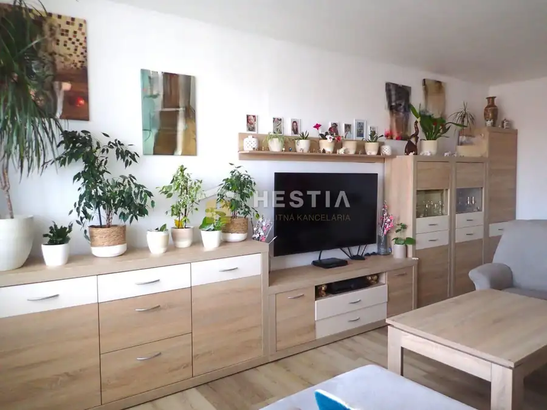
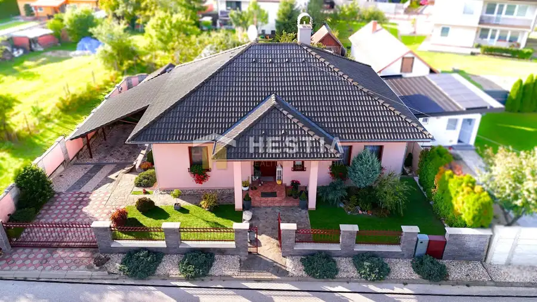
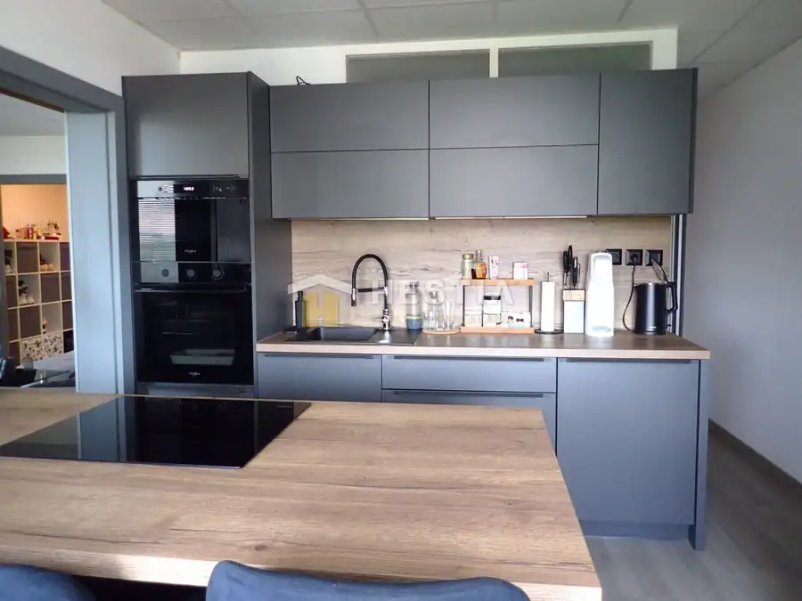
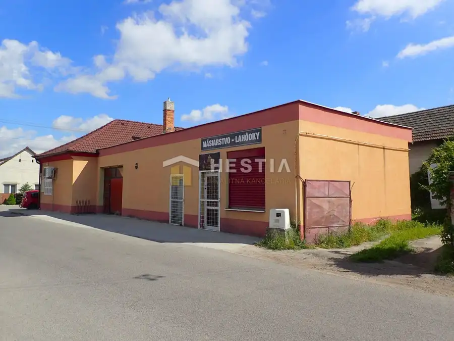
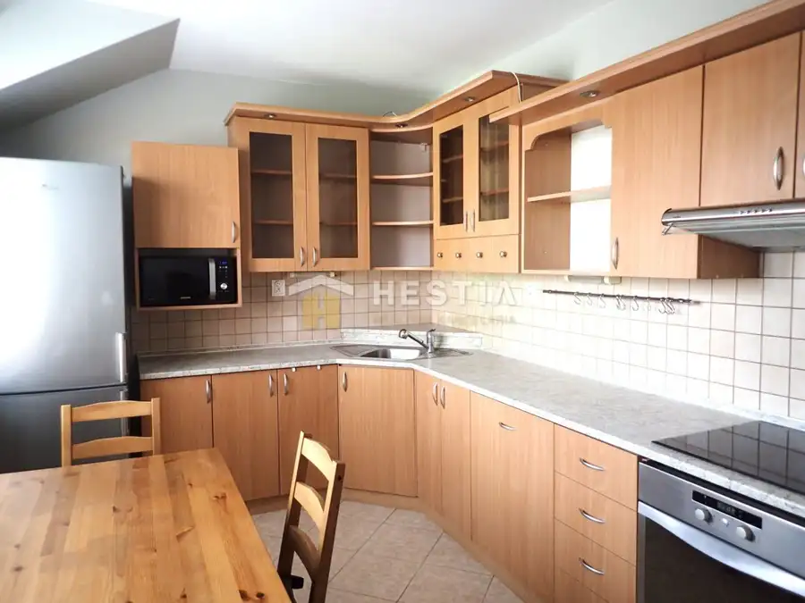
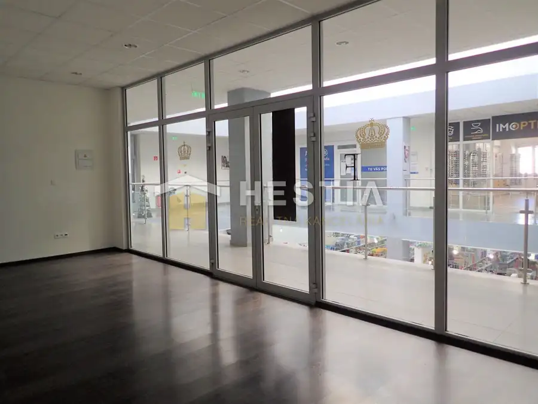
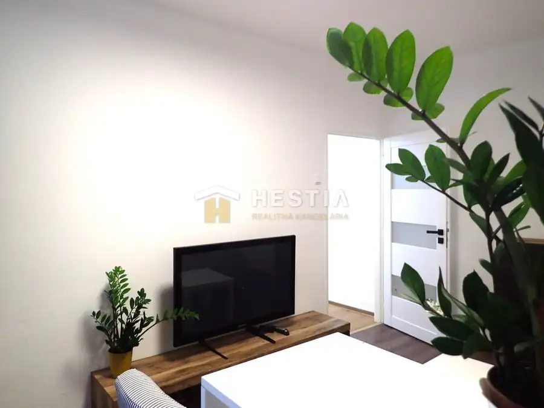
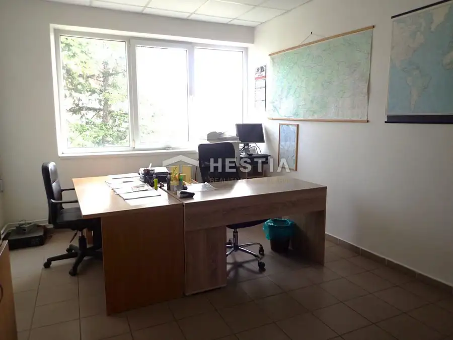
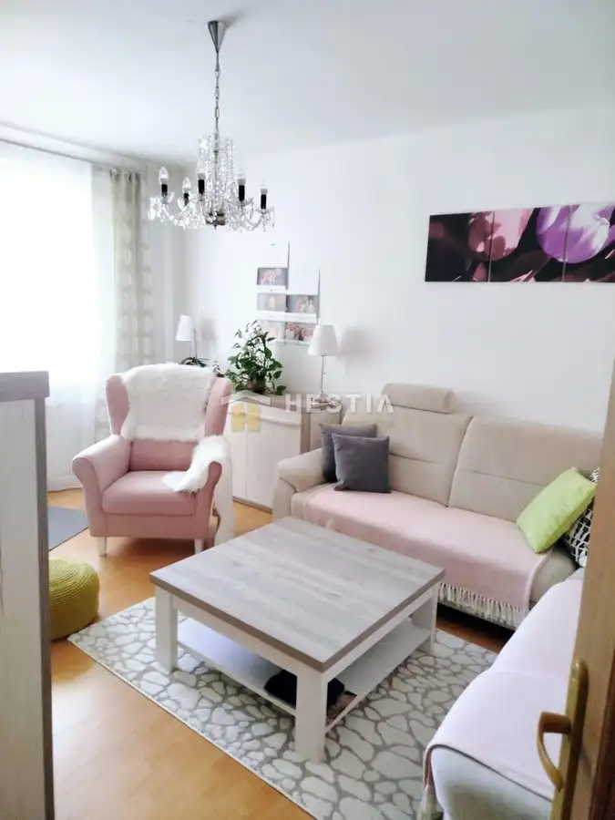

Aktuálna ponuka
9 nehnuteľností, predovšetkým byty, rodinné domy. Každá má vlastnú stránku s fotkami, popisom a mapou.
Prezrieť ponukuMartina OvečkováRealitná maklérka
Realitná maklérka · HESTIA real s.r.o.
Predaj a prenájom nehnuteľností · Senica, Borský Mikuláš, Smrdáky




Rodinné domy10 159 900 €Podnikateľský objekt s pozemkom na predaj Borský Mikuláš Borský Mikuláš 250 m² Ponúkame na predaj nehnuteľnosť v obci Borský Mikuláš na ulici Smuhy, vo frekventovanej časti obce s výbornou dostupnosťou a viditeľnosťou. Jedná sa…
Byt10 149 500 €Veľký 3-izbový byt s 2 balkónmi vo vyhľadávanej lokalite Sotina Senica 3-izbový93 m²4. podlažie Ponúkame na predaj útulný, veľkometrážny 3-izbový byt, ktorý sa nachádza vo vyhľadávanej lokalite na ulici Gen. L. Svobodu v Senici. Byt o celkovej…
Byt6 Cena dohodouObchodný priestor na prenájom – centrum mesta Senica 2-izbový31 m² Ponúkame na prenájom obchodný priestor o výmere 31 m2, ktorý sa nachádza priamo v centre mesta na 1. poschodí v obchodnom dome. Priestor je vhodný na…
Byt10 Cena dohodouÚtulný, zariadený 1-izbový byt na prenájom Senica 1-izbový36 m² Ponúkame na prenájom útulný 1-izbový byt, ktorý sa nachádza na 1/3 poschodí v zateplenej bytovke v tichej časti mesta na Kalinčiakovej ulici. Byt o…
Nebytové priestory3 Cena dohodouKancelária na prenájom v centre mesta 33,5 m2 Senica 33 m²2. podlažie Ponúkame na prenájom kanceláriu o výmere 33,5 m2, ktorá sa nachádza priamo v centre mesta. Priestor sa nachádza v budove s výťahom na 2.poschodí.…
Byt10 103 000 €Na predaj 2-izbový byt v centre mesta, možná výmena za 3-izbový + dopl Senica 2-izbový50 m² Ponúkame na predaj 2-izbový byt s výmerou 50 m², nachádzajúci sa na prízemí bytového domu bez výťahu, priamo v centre mesta na ulici Námestie…Tomuto výberu zatiaľ nezodpovedá žiadna ponuka. Napíšte mi, čo hľadáte.
Volám sa Martina Ovečková. Som realitná maklérka kancelárie HESTIA real s.r.o. a pôsobím predovšetkým v lokalitách Senica, Borský Mikuláš a Smrdáky (Trnavský kraj).
9 nehnuteľností, predovšetkým byty, rodinné domy. Každá má vlastnú stránku s fotkami, popisom a mapou.
Prezrieť ponukuSenica, Borský Mikuláš, Smrdáky a okolie. Ponuku si môžete prezrieť podľa lokality.
Nehnuteľnosti v lokaliteOdhad trhovej ceny, príprava prezentácie, obhliadky, zmluvy a odovzdanie nehnuteľnosti.
Dohodnúť stretnutieNa čo sa pýtate najčastejšie, skôr než sa stretneme.
Odhad trhovej ceny vychádza z aktuálnych ponúk a predajov v lokalite, nie z cenníkových tabuliek. Podmienky Vám poviem pri prvom telefonáte.
Najprv obhliadka a odhad ceny, potom príprava prezentácie (fotografie, popis, inzercia), obhliadky so záujemcami, rezervačná zmluva, kúpna zmluva, návrh na vklad do katastra a odovzdanie nehnuteľnosti. O každom kroku viete vopred.
Najrýchlejšie cez WhatsApp alebo telefón. Termín stretnutia alebo obhliadky dohodneme podľa Vás.